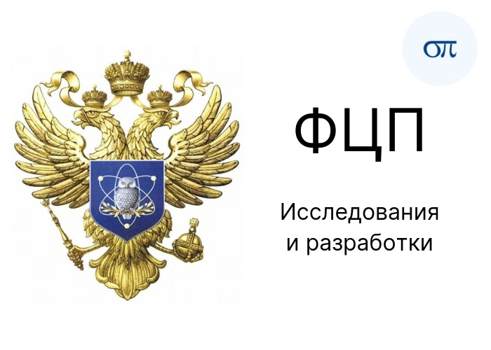
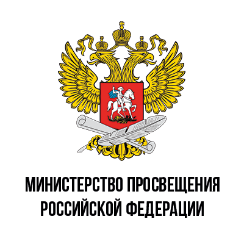

Войны Петра Великого
1700—1721 Великая Северная война со Швецией
Причина
Причиной было желание Петра I получить доступ к Балтийскому морю (для развития морской торговли с Европой) и вернуть земли, ранее принадлежащие Русскому царству.
Итог
Долгая и кровопролитная война закончилась победой Русского царства, переименованного по такому случаю в Российскую империю.
Согласно условиям Ништадского мирного договора к России были присоединены Ингрия, Карелия, Эстляндия, Лифляндия, основан Санкт-Петербург — за это Швеции Петр I заплатил компенсацию в 2 млн талеров.
1710 — 1713 Русско-турецкая война
Шведский король Карл XII, бежавший после поражения под Полтавой в Турцию убедил султана Османской империи объявить войну Петру I (для возвращения Азова и захваченных во время Азовских походов территорий)
Итог
Петр I лично возглавил Прутский поход против Турции в 1711 году, но попав в окружение был вынужден вернуть захваченный ранее Азов, а также разрушить Таганрог — это позволило избежать дальнейшей войны на два фронта.



